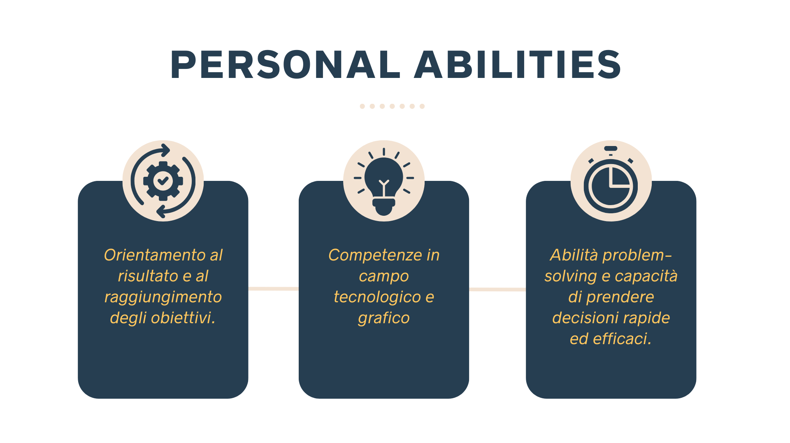

Katiuscia Balia
Studentessa in full stack development.
About me!
Ho iniziato la mia carriera come progettista CADCAM dentale, attratta dalla possibilità di usare la tecnologia per migliorare la vita delle persone.
In questo ruolo, ho acquisito solide competenze in progettazione 3D e produzione. Col tempo, il mio interesse si è spostato verso lo sviluppo web e delle app, riconoscendo il loro potenziale impatto positivo sulla società.
Per questo, mi sono iscritta al master in full stack developer di Star2Impact. Sono entusiasta di iniziare la mia nuova carriera come sviluppatrice web e app, e grata per l'opportunità di creare prodotti digitali significativi. Continuo a imparare ogni giorno e sono curiosa di scoprire cosa mi riserva il futuro.
Formazione e Competenze
Skills

I miei hobby
Oltre a dedicarmi alla programmazione, mi dedico a diversi hobby che alimentano la mia creatività e passione come la pittura, il ricamo e la creazione di illustrazioni.


Seguimi sui miei canali creativi!
Non perdere neanche un contenuto esclusivo dei miei lavori handmade! Seguimi su TikTok e Instagram per aggiornamenti, tutorial, e dietro le quinte delle mie creazioni uniche.